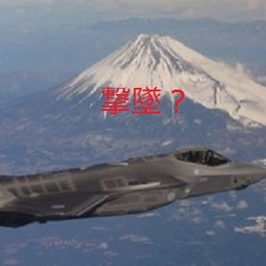

| 2019年4月の歴史: 愚の歴史は繰り返される | |
| 陳列館 | |
| (2019) | |
201 9年4 月の歴史
陳列館

初めに
4 月になり、その国では年度が替わり、気候も良くなるから、それまで冬眠状態だった事物が動き出す。文字通りの「啓蟄」である。農本主義の国柄、その季節、春は人々が待ち望むものだが、同時に人々の奇行や犯罪も増加する。ある種の人々にとって、この季節特有の花粉症の様に、それはひたすら鬱陶しく、且つやるせない。確かに、気候に左右されるのが生物の定めであるが、それが人的・物的被害を生むとしたら、その怨嗟はどこにぶつけたら良いものか？人間は感情の動物であるから、それが憎しみの感情に変わり、それは復讐の連鎖となって、留まるところが無い。最終的には、大量破壊兵器により、巨大な破壊を齎し、一旦、憎しみの感情は収束する。しかし、世代を超えてそれは蒸し返される。それこそ、人類全体が脳外科でロボトミー手術でも受けない限り、留まる事は無い。
ここに来て、人類は思想的に統一されるどころか 、2 極化が著しい。
曰く、
◎ 保守と革新
◎ 自由主義と保護主義
◎ 自らの信仰の神格化と異端の排除
◎ 平和主義と排他主義
◎ 両性間の争い
正に、争いの種は尽きない。また 、2 分した勢力が更に細分化され、争いは複雑化して行く。
歴史は繰り返されるというよりは、進歩する事なく、悪化し、複雑化が増すばかりである。
その中で、毎日起こる事象は、ほとんどが負の問題を抱えるものであり、正しいとか喜ばしいとか、人々の生活に寄与するものは極めて少ない。それでも、この事象は、評価できる。善悪で言えば、善だ、というものも少数存在する。今月号から、そうした数少ない事象を 赤字 で記入する事とする。尤も、万人にとって喜ばしいとは限らない。多分に皮相な内容を含むものもあろう。しかし、著者は客観性を重んじるから、極めて公正的な記述をするつもりである。それにより、世上の欺瞞や誤謬を炙り出していきたい。そして、正しいと主張するものかが如何に誤っているかを知って欲しい。残念なのは、そうした誤りや悪が必ずしも罰せられたり、淘汰されず、逆に、蔓延る事が多い。所謂、憎まれっ子、世に蔓延る、だ。そして、善が滅ぼされ、日の目を見ず、怨嗟の内に、我慢を強いられる事だ。正に矛盾・不公平に満ちた世間である。従い、現代に生きる人々は、悪の生き残りの末裔、鬼胎ばかりであろう。渡る世間は鬼ばかりというではないか？それが、人生の真実である事は、今更述べるもでもないだろう。
目次
４月１日（月）年号変更の発表で号外の奪い合い、幼児負傷
２日（火）軽自動車とトラックの衝突で死者連発
政府シナイ半島に自衛隊派兵
３日（水）塚田副大臣、忖度で安倍麻生道路を推進
４日（木）ピエール瀧釈放
ゴーン再逮捕
５日（金）ベゾス氏離婚、妻に株 式 36 0 億ドル
イチロー国民栄誉賞辞退、三度目
６日（土）内田裕也葬式、娘也哉子式辞 " Fuckin' Yuya Uchida, Don't rest in peace,
just Rockn' Roll"
７日（日） 福岡県知事、麻生応援候補敗北
８日（月）道府県議選投票率最 低 44. 8 ％
豊洲、ターレ運転男性死亡
９日（火）突然新紙幣肖像発表
１０日（水 ） F35 A 墜落、欠陥機露呈
１１日（木）桜田更迭、「復興より大事な高橋議員」
１２日（金 ） WT O で敗訴、日本輸出禁止に
１３日（土） 上野千鶴子、東大入学式で男女差別批判
１４日（日） タイガーウッズ久々の優勝
１５日（月）ノートルダム大聖堂焼け落ちる
１６日（火）外務省元イラン大使セクハラで訴えられる
１７日（水）スズ キ 20 2 万台リコール届出
１８日（木）台湾花蓮で震 度7（ M6. 1 ）
羽生田消費税延期、衆参同日選挙に言及
１９日（金）池 袋 8 7 歳爆走老人プリウス で2 人死傷
２０日（土）神戸バス暴走 、2 人死傷
２１日（日）スリランカコロンボで死 者 20 7 人、負傷 者 45 0 人
２２日（月）ルノー日産経営統合浮上
２３日（火 ） J R 脱線初めて現場で慰霊祭
２４日（水）ロ朝首脳会議
ガソリン高 値 14 8 円
オリンピック選手村用地格安処分 、 150 0 億円値引き
２５日（木）ジャパンライフ詐欺 、 240 0 億円被害
野 村 H D 赤字転 落 100 4 億円赤字、リーマンショック以 来 1 0 年振り
２６日（金）日経平 均 3 0 年で 、 800 0 円下落
２７日（土）お茶の水女子大付属中学で、悠仁の机に刃物が仕掛けられる
２８日（日）連休中、閣僚の不要不急な外遊が激化
世界卓球で日本が審判に不当抗議
２９日（月）ユチョン容疑者罪状認める
３０日（火）改元道頓堀ダイブで船に激突
４月１日（月）年号変更の発表で号外の奪い合い、幼児負傷
年号は、令和に決まったが、反響は様々である。新しい時代の始まりだ、などと、国営放送・右翼団体は根拠の無い祝賀を煽っているが、一般国民は冷静だ。しかし、そうした煽りが、犠牲者を生む。この号外の奪い合いなど、その典型だ。
古来、世の中が乱れると、改元するという事例があったらしいが、その意味では、平成は経済的にもその国は転落の一途で、同時に超老齢社会となり（それは人為的な事象であるが）、天災は連続し、正に惨憺たる「時代」であった。それを、戦争が無い平和などと言っているのは、近代史から見て、その国が主体になる戦争が無いという事で、国の外はむしろ、戦争・戦乱は激化している。特に 、 200 0 年劈頭の米国同時多発テロなどは、古来の伝統的戦乱では無く、宣戦布告も国家による軍隊の発動も無く、しかも敵国の民間機を利用した攻撃という、全く新しい戦争まで現れた。正に人類は破滅に向かっていると言って過言ではない。
ところで、その国では、社会の衰退と共に保守化が進行しており、政治的にも右翼的言辞が優位になっているが、実際の統計では、戦闘的右翼（日本会議など）は、過激派の左翼より遥かに少数で、その国全体で数万人との見方もある。しかし、何故彼らが幅を利かすのか？それは、彼らが政府中枢に巣食っており、声が大きく、且つマスコミも牛耳っているからだ。しかも、その国の暴力装置、即ち警察・自衛隊等武力集団は、殆ど右翼的人員で構成されており、無辜の民を弾圧する用意が常にある。この構造は、今に始まった事ではなく、おそらく国の成り立ちからして、そうした武装勢力が無辜の民を弾圧、時には虐殺して、いう事を聞かせて来た歴史がある。それを、例えば、流血革命で、民衆に権力を握らせても、しばらくすると、その中から、旧態依然の力で民衆をねじ伏せる輩が出現するのは、想像に難くない。
２日（火）軽自動車とトラックの衝突で死者連発
交通事故が多発している。また、一度衝突事故を起こすと、死傷を含め、甚大な人身事故に発展する。その原因は様々であるが、ひとつには、燃費向上の余り、車体の軽量化が過度に進み、エアバックなどの衝突緩衝装置は普及しているものの、一度、衝突などするものなら、車体の大破は免れない。文字通りの人災と言える。事故車の映像を見ると、丸で紙で出来た様な車体が無残にも破壊されており、運転席はエアバックが作動されていて、運転手自体は一命を取り留めるが、ぶつけられた歩行者はひとたまりも無いのが十分に想像される。以前は、自動車は「走る棺桶」と称されていたが、現代では「走る凶器」の称号のみ残る。今後、テクノロジーが進み、自動運転化されても、時 速 10 0 ｋｍを瞬時に制動する事は困難であるから、この称号は変わらないであろう。
同日 政府シナイ半島に自衛隊派兵
憲法など改正しなくても、実際戦争放棄の第九条など形骸化している。しかし、国全体で観ると、玩具の兵力に過ぎない様な国防費の支出などは大した金額を占めない。実に恐ろしきは、肥大化し、更に肥大化する社会保障費だ。その内の、年金は、完全積立方式の移行で無理やり解消する方向にあるが、老人医療費は、抜本的に窓口負担を増やすとか、課税するとかして、受益者負担にしないと、破滅を早めるだけである。全ての世代が負担する消費税の大幅アップを良策では無い。消費控えが起き、経済が崩壊するからだ。老人医療費の削減乃至負担増しか、その国の財政を救う策は無いが、それは老人の甚大なる抵抗、医療界の無駄な抵抗が待っているが、それを恐れずに断行しなければ、それこそ、その国の存亡に拘る。これこそ、戦乱と言って良いだろう。現実のその戦況は極めて悪化している。一方、フリーライダーたる国民は、病んでいても病んでいなくとも、自分に降りかかる問題であるから、この出血を止める事は無いであろう。如何なる治療法も無い、その国の癌＝宿唖である。
３日（水）塚田副大臣、忖度で安倍麻生道路を推進
聞くに落ちず、語るに落ちるという事だ。問題は、この程度の低い議員の戯言ではなく、それを容認し、人材のいない現政府の体たらくであろう。論評の価値なし。
４日（木）ピエール瀧釈放
薬物は、暴力団の資金源になるから取り締まるとか、吸飲者の健康を守るなどの建前の議論は、今後通じないであろう。その見解を推し進めると、所謂合法麻薬、酒・煙草を取り締れという極論に進む。解決策は一つしか無い。薬物の合法化である。その国が太平洋戦争の敗戦後、テンションを下げずに勤労意欲を高めたのは、一重に覚醒剤、即ち「ヒロポン」の存在である事は、論を待たない。今、それを取り締るのは、中毒患者を阻止するという論法だが、果たしてそうなのか？薬害も、報じられている程、有害なのか？やはり、その客観的な検証が必要である。
同日 ゴーン再逮捕
この先、何度、拘留→保釈が繰り返されるのか？民衆のシャーデンフロイデを満足さ
せつつ、オキシトシンの分泌を促すだけである。それでいて、その国の経済犯の特徴である、量刑は極めて軽微なものに留まる予感がある。
５日（金）ベゾス氏離婚、妻に株 式 36 0 億ドル
AMAZO N は流通革命を齎し、買い物の利便性を高めたが、その裏腹に多くの店舗型商店を淘汰させた。このまま行くと、対面販売などは根絶する可能性もある。そうなると、従来型のサービス業を変える代償として、雇用形態も変わり、人件費が大幅に削減されるだろう。そうなると、労働そのものの概念も変わる。何を労働と称するかも変わる。頭脳労働？いや、人類はそこまでスマートではない。
ベゾス氏は、配偶者までコントロール出来なかった。その意味は大きく、革命の限界を示すものと言えよう。
同日 イチロー国民栄誉賞辞退、三度目
イチローの血液型はＢ型である。その行動様式も、思考方法も、プレースタイルも、妥協を知らぬ、もの言いもそれを表している。日米で何本ヒットを打ったか、それは大した功績では無い。むしろ、時の政権に阿らず、自分を貫いた姿勢こそ、賞賛すべきである。ヒットの多さは寧ろ、僥倖である。左バッターで、足が速いという要素が全てだ。それが無ければ、打率も安打数も並み以下のバッターである事は言うまでも無い。また、引退後、野村克也氏が指摘している様に、監督などの指導者にはイチローはなるべきではない。ＡＩでは無く、生身の人間が配下になる以上、軋轢は避けられず、そのチームは自壊する事は眼に見えている。
６日（土）内田裕也葬式、娘也哉子式辞
" Fuckin' Yuya Uchida, Don't rest in peace,
just Rockn' Roll"
この親にしてこの娘あり。しかし、内田裕也は、何のヒット曲も無い事を誇りにしていたというが 、 YouTub e で見られる、ビートルズ来日時のコンサートの前座で歌う姿は感心するものがある。
７日（日） 福岡県知事、麻生応援候補敗北
自民党の自壊は、文字通り、内部の揉め事に始まる。正に、一分而二を地で行く。そもそも、自民党は複雑で、雑居状態の政党であり、権力を握っている間こそ、結束している様だが、傾くと烏合の衆に戻る。
８日（月）道府県議選投票率最 低 44. 8 ％
政治に対する無関心は、永年の政治に対する期待外れと、制度疲労と、無力感がないまぜになった事象であり、現実に独裁政権に横紙破りの姿を見せられると、さもありなんと思われる。
同日 豊洲、ターレ運転男性死亡
今や恒例となった、ターレと言う名の殺人マシーンの跳梁跋扈である。また、繰り返されるだろう。ターレが無くなる日まで。
９日（火）突然新紙幣肖像発表
これから、キャッシュレス化が始まるというのに、単なる失業対策、業者に対するサービスか？それにしても、人選が振るっている。渋沢栄一、津田梅子、北里柴三郎か。一見、無難な人選の様だが、その存命中に起こした問題（渋沢、津田の朝鮮に対する惨い振る舞い、北里の傍若無人の事績など）を考えると如何にも反動の現政権が考えそうな人選だ。著者はその国の近現代史を顧みて、次の人選を提案する。
一万円：杉原千畝
五千円：与謝野晶子
一千円：手塚治虫
理由は述べるまでも無かろう。真の偉人は、奢らず、黙々と善を積み、且つ人々に敬服される。その国で、一般に偉人と称する者は、往々にして、人々の幸福を踏みにじり、自己満足のみに生きたものが多い。
１０日（水 ） F35 A 墜落、欠陥機露呈
本月の口絵をご参照願いたい 。1 兆円を超す国家予算を先取りしてまで、購入を決めた事を論う論調が多いが、この機体、実際は三菱重工による組み立てだ。日本の航空産業は、太平洋戦争後、骨抜きにされ 、 MR J の欠陥に代表される様に、壊滅状態である。その中で、ノックダウン技術も推して知るべしである。今回の太平洋の藻屑と化した機体は、既に中華人民共和国海軍により、回収済であり、パイロットも魚類の餌と化しておろう。正に国費の無駄と、多大の犠牲を払った、戦争ごっこの慣れの果てと言えよう、しかし、その顛末は初めから判っていた。今回、撃墜でもされていたら、まだ救いがあったが、そうでは無かった様だ。
１１日（木）桜田更迭、「復興より大事な高橋議員」
正直極まり無い。絵に描いた様な失言というよりも、何も考えていないボーンヘッド、元々政治家は、その国の程度低さを反映しているので、何の不思議も無い。
１２日（金 ） WT O で敗訴、日本輸出禁止に
当然の裁定であるが、驚くべきは、それを不服として提訴した政府の方針だ。
１３日（土） 上野千鶴子、東大入学式で男女差別批判
中々、言えないことを公式の場で述べた事は大いに賞賛に値する。しかし、所詮は問題点のみ指摘し、それを解決する事はしない学者の妄言とも言える。巻末の全文ご参照。それを証拠に、似合わない法服の様なコスチュームを嬉々として着ている姿が全てを物語っている。
１４日（日） タイガーウッズ久々の優勝
誰もが二度と復活しない、終わった男と思われたタイガーの劇的な復活。しかしその内容に不思議は無い。ゴルフという競技は、勝ち残りでは無く、負けない（＝ミスを最小限に抑える）守りのスポーツである事から、それを粛々と進めれば、最後は栄冠が待っている。攻撃は最大の防御という格言は当てはまらない。防御の極みが、終わってみれば最大の攻撃だった、とでも言おうか。
１５日（月）ノートルダム大聖堂焼け落ちる
本件、失火という事故なのか、放火という事件なのか、定かではないが、壊滅的 な破壊を受けた事だけは確かである。折しも、マクロン政権の暴政が吹き荒れ、連日の反政府デモが繰り広げられている中なので、何らかの事件を連想せざるを得ない。それにしても、この火災後、何千億円という再建に向けての寄付があったとか、次期パリオリンピックを狙って の3 年以内の再建を目指すなどのマクロン声明があったりなど、不自然な事象が多い。パリに行くと判るが、この大聖堂は周りの建造物に比べても、威圧的な姿は、景観にそぐわない。丘の上に立つ、サクレクール寺院の丸みの帯びた優美な建築物に比べ、異様さが目立つ。周辺には。フランス革命時の呪われた遺跡が多いのもそれを演出している。今後、どう終結していくか判らぬが、フランスは第二次革命を必要としているのかも知れない。
１６日（火）外務省元イラン大使セクハラで訴えられる
その男の名前は、駒野欽一、詳しい内容は記述に値しないが、外務省内でのセクハラは以前からのお家芸であり、特に珍しい事ではない。一罰百戒の為、厳罰に処すべし。
１７日（水）スズ キ 20 2 万台リコール届出
日本製品は欠陥に満ち溢れている。その理由は、過度のコストカットと、技術力の衰えと、メインテナンス体制の崩れである。
１８日（木）台湾花蓮で震 度7（ M6. 1 ）
火山帯による副作用。その国では、これに加えて、海底プレートの歪みが存在する。
同日 羽生田消費税延期、衆参同日選挙に言及
自民党は如何なる手段を用いても選挙に勝つ事しか考えていない。政策はその為の物であり、国政ではなく、「私政」である。また、それを覆そうとする有権者もいないから、処置なしである。
１９日（金）池 袋 8 7 歳爆走老人プリウス で2 人死傷
容疑者飯塚幸三は、轢き逃げを企てた、殺人犯である。
それにしても、プリウスに拠る暴走事故が多発している。トヨタ工場にもメスを入れるべきである。そうでないと、犠牲者を徒に増やす事となる。
２０日（土）神戸バス暴走 、2 人死傷
事故は連発する。好事魔多しではなく、好事は繰り返されない。
２１日（日）スリランカコロンボで死 者 20 7 人、負傷 者 45 0 人
宗教戦争は留まるところが無い。
２２日（月）ルノー日産経営統合浮上
資本の論理で言えば、国境は無い筈だ。ナショナリズムが付きまとうのが厄介である。元々、その国で永年の放漫経営で、崩壊の危機にあった自動車会社を外資で救った訳であるから、その時の反省なしに、今更ナショナリズムを振りかざすのはおかしい。また、経営者の独裁体制、公私混同を特別背任というのも、感情論であって、論理性を欠く。ここで、法倫理も持ち出すのもおかしい。
２３日（火 ） J R 脱線初めて現場で慰霊祭
死んだ犠牲者は浮かばれない。
２４日（水）ロ朝首脳会議
初めから決裂は眼に見えていた様だが、この結論は、米側の強硬派ジョン・ボルトンの外交センスの欠如が為した結果と思われる。これにより、再度、戦争リスクは高まった。
同日 ガソリン高 値 14 8 円
オイル価格は政治の産物であり、市場価格では無い。
同日 オリンピック選手村用地格安処分、
150 0 億円値引き
東京の不動産価格は下落している。仕組まれた地価だからだ。ましてや 、 202 0 年以降、供給が増え、買い手も不在となれば、いよいよ本格的なミニバブルは弾ける事は眼に見えている。しかし、バブルが弾けるまで、投資した人間は眼が覚めない。それは鉄の法則である。早く売り逃げた物が常に勝つ。
２５日（木）ジャパンライフ詐欺 、 240 0 億円被害
世に詐欺の種は尽きまじ。本件は安倍信三が広告に一役買った事で知られる。
同日 野 村 H D 赤字転 落 100 4 億円赤字、
リーマンショック以 来 1 0 年振り
株式市場は活気を呈している筈なのに、証券会社が赤字なのは、一重に売買件数の少なさによるのだろう。それもその筈、日銀 や GPI F のインデックス買いで高値を演出している訳だから、証券会社の手数料は産まない。官製市場の末路哀れ。
２６日（金）日経平 均 3 0 年で 、 800 0 円下落
上記の記事ご参照。いい加減、株価で景気を語るのは空しくないか？御用放送は 、 T V ニュースで株価の上昇時だけ、律儀に数字を読み上げ、下落した時は、「ご覧の株価です」というのは、実に判りやすい世論操作であると思う。
２７日（土）お茶の水女子大付属中学で、悠仁の机に刃物が
仕掛けられる
容疑者、長谷川薫は、悠仁の死傷まで考えていたという。昭和前夜の摂政暗殺未遂の虎の門事件を例に引くまでもなく、こうした血醒さは尾を引く。
２８日（日）連休中、閣僚の不要不急な外遊が激化
税金は無駄使いする為にある。
同日 世界卓球で日本が審判に不当抗議
ルールは重んずるべきだ 。 VT R や機器を使ったチャレンジが認められていない以上、審判のジャッジが最終である。本件、その国のペアが負けたから良いものの、仮に審判が判定を覆し、結果、その国ペアが勝ったとしよう。それこそ、遺恨を残し、問題が激化する。判定をそのまま、受け入れ、その後堂々と勝利を追及すべきだ。（ ⇒ WT O 敗訴）
２９日（月）ユチョン容疑者罪状認める
金銭と人気で、犯罪を隠ぺいする事は困難だ。ショーデンフロイデの一環。
３０日（火）改元道頓堀ダイブで船に激突
幸いにも大事には至らず、殉教者にはなれずに終わる。
● 上野千鶴子の祝辞全文は、以下の通り。（2019年4月12日）
ご入学おめでとうございます。あなたたちは激烈な競争を勝ち抜いてこの場に来ることができました。
その選抜試験が公正なものであることをあなたたちは疑っておられないと思います。もし不公正であれば、怒りが湧くでしょう。
が、しかし、昨年、東京医科大不正入試問題が発覚し、女子学生と浪人生に差別があることが判明しました。
文科省が全国81の医科大・医学部の全数調査を実施したところ、女子学生の入りにくさ、すなわち女子学生の合格率に対する男子学生の合格率は平均1.2倍と出ました。
問題の東医大は1.29、最高が順天堂大の1.67、上位には昭和大、日本大、慶応大などの私学が並んでいます。1.0よりも低い、すなわち女子学生の方が入りやすい大学には鳥取大、島根大、徳島大、弘前大などの地方国立大医学部が並んでいます。
ちなみに東京大学理科3類は1.03、平均よりは低いですが1.0よりは高い、この数字をどう読み解けばよいでしょうか。統計は大事です、それをもとに考察が成り立つのですから。
女子学生が男子学生より合格しにくいのは、男子受験生の成績の方がよいからでしょうか？
全国医学部調査結果を公表した文科省の担当者が、こんなコメントを述べています。「男子優位の学部、学科は他に見当たらず、理工系も文系も女子が優位な場合が多い」。
ということは、医学部を除く他学部では、女子の入りにくさは1以下であること、医学部が1を越えていることには、なんらかの説明が要ることを意味します。
事実、各種のデータが、女子受験生の偏差値の方が男子受験生より高いことを証明しています。
まず第1に女子学生は浪人を避けるために余裕を持って受験先を決める傾向があります。
第2に東京大学入学者の女性比率は長期にわたって「2割の壁」を越えません。今年度に至っては18.1％と前年度を下回りました。
統計的には偏差値の正規分布に男女差はありませんから、男子学生以上に優秀な女子学生が東大を受験していることになります。
第3に、4年制大学進学率そのものに性別によるギャップがあります。2016年度の学校基本調査によれば4年制大学進学率は男子55.6％、女子48.2％と7ポイントもの差があります。
この差は成績の差ではありません。「息子は大学まで、娘は短大まで」でよいと考える親の性差別の結果です。
最近ノーベル平和賞受賞者のマララ・ユスフザイさんが日本を訪れて「女子教育」の必要性を訴えました。それはパキスタンにとっては重要だが、日本には無関係でしょうか。
「どうせ女の子だし」「しょせん女の子だから」と水をかけ、足を引っ張ることを、aspirationのcooling down、すなわち意欲の冷却効果と言います。
マララさんのお父さんは、「どうやって娘を育てたか」と訊かれて、「娘の翼を折らないようにしてきた」と答えました。そのとおり、多くの娘たちは、子どもなら誰でも持っている翼を折られてきたのです。
そうやって東大に頑張って進学した男女学生を待っているのは、どんな環境でしょうか。
他大学との合コン（合同コンパ）で東大の男子学生はもてます。
東大の女子学生からはこんな話を聞きました。「キミ、どこの大学？」と訊かれたら、「東京、の、大学...」と答えるのだそうです。なぜかといえば「東大」といえば、ひかれるから、だそうです。
なぜ男子学生は東大生であることに誇りが持てるのに、女子学生は答えに躊躇するのでしょうか。
なぜなら、男性の価値と成績のよさは一致しているのに、女性の価値と成績のよさとのあいだには、ねじれがあるからです。
女子は子どものときから「かわいい」ことを期待されます。ところで「かわいい」とはどんな価値でしょうか？
愛される、選ばれる、守ってもらえる価値には、相手を絶対におびやかさないという保証が含まれています。だから女子は、自分が成績がいいことや、東大生であることを隠そうとするのです。
東大工学部と大学院の男子学生5人が、私大の女子学生を集団で性的に凌辱した事件がありました。加害者の男子学生は3人が退学、2人が停学処分を受けました。
この事件をモデルにして姫野カオルコさんという作家が『彼女は頭が悪いから』という小説を書き、昨年それをテーマに学内でシンポジウムが開かれました。
「彼女は頭が悪いから」というのは、取り調べの過程で、実際に加害者の男子学生が口にしたコトバだそうです。この作品を読めば、東大の男子学生が社会からどんな目で見られているかがわかります。
東大には今でも東大女子が実質的に入れず、他大学の女子のみに参加を認める男子サークルがあると聞きました。
わたしが学生だった半世紀前にも同じようなサークルがありました。それが半世紀後の今日も続いているとは驚きです。
この3月に東京大学男女共同参画担当理事・副学長名で、女子学生排除は「東大憲章」が唱える平等の理念に反すると警告を発しました。
これまであなたたちが過ごしてきた学校は、タテマエ平等の社会でした。偏差値競争に男女別はありません。
ですが、大学に入る時点ですでに隠れた性差別が始まっています。社会に出れば、もっとあからさまな性差別が横行しています。東京大学もまた、残念ながらその例のひとつです。
学部においておよそ20％の女子学生比率は、大学院になると修士課程で25％、博士課程で30.7％になります。
その先、研究職となると、助教の女性比率は18.2、准教授で11.6、教授職で7.8％と低下します。これは国会議員の女性比率より低い数字です。
女性学部長・研究科長は15人のうち1人、歴代総長には女性はいません。
こういうことを研究する学問が40年前に生まれました。女性学という学問です。のちにジェンダー研究と呼ばれるようになりました。
私が学生だったころ、女性学という学問はこの世にありませんでした。なかったから、作りました。
女性学は大学の外で生まれて、大学の中に参入しました。4半世紀前、私が東京大学に赴任したとき、私は文学部で3人目の女性教員でした。そして女性学を教壇で教える立場に立ちました。
女性学を始めてみたら、世の中は解かれていない謎だらけでした。
どうして男は仕事で女は家事、って決まっているの？主婦ってなあに、何する人？ナプキンやタンポンがなかった時代には、月経用品は何を使っていたの？日本の歴史に同性愛者はいたの？
...誰も調べたことがなかったから、先行研究というものがありません。ですから何をやってもその分野のパイオニア、第1人者になれたのです。
今日東京大学では、主婦の研究でも、少女マンガの研究でもセクシュアリティの研究でも学位がとれますが、それは私たちが新しい分野に取り組んで、闘ってきたからです。そして私を突き動かしてきたのは、あくことなき好奇心と、社会の不公正に対する怒りでした。
学問にもベンチャーがあります。衰退していく学問に対して、あたらしく勃興していく学問があります。
女性学はベンチャーでした。女性学にかぎらず、環境学、情報学、障害学などさまざまな新しい分野が生まれました。時代の変化がそれを求めたからです。
言っておきますが、東京大学は変化と多様性に拓かれた大学です。わたしのような者を採用し、この場に立たせたことがその証です。
東大には、国立大学初の在日韓国人教授、姜尚中さんもいましたし、国立大学初の高卒の教授、安藤忠雄さんもいました。また盲ろうあ三重の障害者である教授、福島智さんもいらっしゃいます。
あなたたちは選抜されてここに来ました。東大生ひとりあたりにかかる国費負担は年間500万円と言われています。これから4年間すばらしい教育学習環境があなたたちを待っています。
そのすばらしさは、ここで教えた経験のある私が請け合います。
あなたたちはがんばれば報われる、と思ってここまで来たはずです。
ですが、冒頭で不正入試に触れたとおり、がんばってもそれが公正に報われない社会があなたたちを待っています。
そしてがんばったら報われるとあなたがたが思えることそのものが、あなたがたの努力の成果ではなく、環境のおかげだったこと忘れないようにしてください。
あなたたちが今日「がんばったら報われる」と思えるのは、これまであなたたちの周囲の環境が、あなたたちを励まし、背を押し、手を持ってひきあげ、やりとげたことを評価してほめてくれたからこそです。
世の中には、がんばっても報われないひと、がんばろうにもがんばれないひと、がんばりすぎて心と体をこわしたひと...たちがいます。がんばる前から、「しょせんおまえなんか」「どうせわたしなんて」とがんばる意欲をくじかれるひとたちもいます。
あなたたちのがんばりを、どうぞ自分が勝ち抜くためだけに使わないでください。
恵まれた環境と恵まれた能力とを、恵まれないひとびとを貶めるためにではなく、そういうひとびとを助けるために使ってください。
そして強がらず、自分の弱さを認め、支え合って生きてください。
女性学を生んだのはフェミニズムという女性運動ですが、フェミニズムはけっして女も男のようにふるまいたいとか、弱者が強者になりたいという思想ではありません。フェミニズムは弱者が弱者のままで尊重されることを求める思想です。
あなた方を待ち受けているのは、これまでのセオリーが当てはまらない、予測不可能な未知の世界です。
これまであなた方は正解のある知を求めてきました。
これからあなた方を待っているのは、正解のない問いに満ちた世界です。
学内に多様性がなぜ必要かと言えば、新しい価値とはシステムとシステムのあいだ、異文化が摩擦するところに生まれるからです。
学内にとどまる必要はありません。東大には海外留学や国際交流、国内の地域課題の解決に関わる活動をサポートする仕組みもあります。未知を求めて、よその世界にも飛び出してください。
異文化を怖れる必要はありません。人間が生きているところでなら、どこでも生きていけます。
あなた方には、東大ブランドがまったく通用しない世界でも、どんな環境でも、どんな世界でも、たとえ難民になってでも、生きていける知を身につけてもらいたい。
大学で学ぶ価値とは、すでにある知を身につけることではなく、これまで誰も見たことのない知を生み出すための知を身に付けることだと、わたしは確信しています。
知を生み出す知を、メタ知識といいます。そのメタ知識を学生に身につけてもらうことこそが、大学の使命です。
ようこそ、東京大学へ。
（5月号に続く）